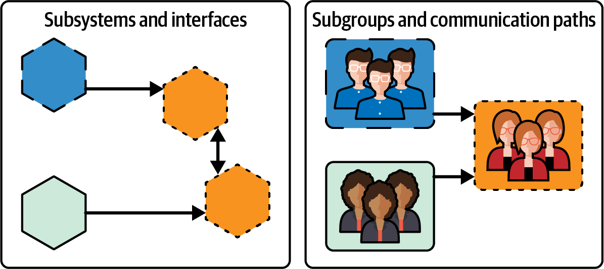

Any organization that designs a system…will produce a design whose structure is a copy of the organization’s communication structure.
Melvin E. Conway
Once you have more than one team, you need to split up your system (since effective teams have sole ownership of the code they work on).
I’m going to start this chapter by discussing what Conway’s Law is and the implications for your organizational structure.
Then, I’ll discuss how you can find the right boundaries between teams (which will also be the boundaries of your architecture), and how to spot when those boundaries need to change. You should expect this, as the needs of your business, or the technology available, or the things you are focused on change—but it will also happen as you understand your domains better.
Really, you want to work on both the organizational design and the system architecture together, because of Conway’s Law. If you have 10 developers, do you need three teams or two? It depends on how you can best split up the system. You are looking for logical splits in the business domain that will be replicated in the architecture, and that allocate work to each team that doesn’t exceed their capacity.
To do this effectively, you need a good understanding of the business, but you also need a high level of technical expertise. Ruth Malan says: “if we have managers deciding…which services will be built, by which teams, we implicitly have managers deciding on the system architecture.”1
Let’s start with Conway’s Law.
In 1968, Mel Conway published a short paper—just 45 paragraphs long—called “How Do Committees Invent?”2
The conclusion of the article, quoted at the start of this chapter, has become known as Conway’s Law, and as Martin Fowler says, it is “Important enough to affect every system I’ve come across, and powerful enough that you’re doomed to defeat if you try to fight it.”
Conway’s Law says that software development organizations produce software architectures that mirror their organization structure: if you have two development teams, you will end up with two subsystems.3
Conway starts by noting that “Any system of consequence is structured from smaller subsystems which are interconnected.” You keep subdividing into smaller systems until you get to a system that is simple enough to be understood. Different teams then design these different subsystems.
As Conway points out, both organizations and systems have a graph structure, made up of nodes and lines. For a system, the nodes represent subsystems and the interfaces between them, and for an organization, they represent subgroups and communication paths (since groups must talk to agree on the interfaces between subsystems). Conway notes that the system and the organization designing it have the same shape. In other words, the subsystems and interfaces will map to the subgroups and communication paths. Figure 4-1 shows what this looks like.4

The separate groups designing subsystems need to coordinate so that the subdesigns can be consolidated into a single design, and you’ll find that teams that are closer together will produce designs that are closer together too, because it’s easier for them to communicate and learn about each other’s systems. Where the different groups are loosely coupled, the design will tend to be loosely coupled: the interfaces will be relatively stable and the two groups won’t need to coordinate work that often. Research from Alan MacCormack and colleagues compared designs produced within commercial firms with open source alternatives and found that the first were much more coupled, as Conway’s Law would predict.5
There are a couple of interesting consequences here. First, because the work gets divided out to the existing groups, any constraints you have in the organization will be represented in the systems too. A hierarchical organization will produce a quite different system design than one that has more of a graph-style structure. This also means there are some types of system design that cannot happen, because the organization can’t support them—for example, where there is a communication gap between two groups that would need to work closely together to produce the design.
Second, in splitting out subsystems, you are inevitably making design decisions already: each delegation rules out certain alternative designs. And so your organizational structure pushes your system to look a particular way.
To give a concrete example from my own career, when you have an organization that has three groups: frontend, backend, and DBAs, you are likely to have three different systems: a web application, the business logic, and the database. Unfortunately, this isn’t a loosely coupled design because pretty much anything you want to do involves changing every layer: for example, if you want to capture additional information about a customer, you have to gather it on the website and pass it through to the database. To change the architecture, you need to change the organizational structure. For a loosely coupled design, you need to move to cross-functional teams, aligned to business domains rather than technical skills; I’ll talk more about this in Chapter 5.
In The DevOps Handbook, by Gene Kim et al., the authors discuss the impact at Etsy of tightly coupled teams.6 Etsy initially had two teams, the developers and the DBAs, and found that changes generally had to be made by both teams. They first attempted to fix this via a service called Sprouter that was designed to encapsulate the database implementation, but Sprouter actually created a tight coupling between the development and database teams and added an additional layer that needed to change. Etsy subsequently addressed this through organizational and architectural changes that moved business logic from the database into the application, meaning that changes now only needed to happen in the application layer.
There are two other things that Conway discusses in his paper that I find really interesting.
First, research that leads to techniques permitting more efficient communication among teams will play an extremely important role in the technology of system management. Each subsystem needs to understand what the other subsystems do so that a single overall coherent design can emerge, but communication is costly. Conway points out that “Elementary probability theory tells us that the number of possible communication paths in an organization is approximately half the square of the number of people in the organization. Even in a moderately small organization it becomes necessary to restrict communication in order that people can get some work done.” This insight is at the core of recent insights into how to optimize for flow within organizations, which will be discussed further in the next couple of chapters: coordination between teams should be minimized if you want people to work effectively.
Microservices (and other loosely coupled architectures) are a tool here. They reduce the communication overhead because they hide much of the information about a system—all the parts that other systems don’t need to know about—behind a well-defined interface. Teams need to communicate only about changes that change that interface.
The second interesting point is around the “rightness” of any design. Conway points out that “It is an article of faith among experienced system designers that given any system design, someone someday will find a better one to do the same job.” You won’t get the design “right,” beyond maybe getting it right given the specific context at that moment: the tech available to you, and your current understanding of the domain.
What this means is, you should expect to iterate as you develop your understanding of what your system design needs to deliver or as the context changes. The best thing you can do is build for evolution of the design. Given Conway’s Law, that iteration is likely to be as much about organizational structure as it is about the design.
You can increase the likelihood of successfully building a new system if you match the design of that system to the design of your organization. You can also go a step further, and attempt the Inverse Conway Maneuver. This is where you evolve the design of your organization to make it easier to build your system the way you want to.7
In fact, you likely need to evolve the organization and the architecture together, particularly if you already have a system in place. It’s no good changing the organization to conflict with that and hoping it will all work out. In “Conway’s Law Doesn’t Apply to Rigid Designs”, Mathias Verraes says, “A reorganisation won’t fix a broken design.” This is where a step-by-step approach, pinching off parts of the system and parts of the organization and changing just those parts, iteratively, may help.
Alright, enough theory, let’s get to it. The Inverse Conway Maneuver isn’t about a big reorganization; it’s about evolving the design of your organization through changes to the way you set up and run teams and to the organizational culture, and those will be discussed in the next chapter. It’s also about finding the right boundaries between separate parts of your organization—the ones that will work effectively—and that’s what we’ll look at next.
Up to this point, I’ve presented a lot of theory, and you may be starting to map this to your own organization’s structure and considering how things may need to change. However, you should be very cautious about throwing everything up in the air, particularly where that involves breaking up existing teams.
Reorganizations are stressful,8 and they impact people’s productivity for weeks or months. They can also be a catalyst that helps people overcome their own inertia, making it more likely that people will leave the organization.
You probably won’t know up front what the end state architecture and organization design should be, so keep teams together where you can, and evolve them over time.9
How can you decide where the boundaries are between teams?
At the highest level, you can probably start to identify boundaries by looking at the customers and at your stakeholders. At the Financial Times, it makes sense to have a group of developers working with the editorial department, who need tools for creating, managing, tagging, and publishing different types of content. There is also a natural grouping of internal departments other than editorial who need software for their needs: HR, finance, and marketing. Sometimes, though, there are multiple stakeholders for a particular area. At the FT, the group of developers working on the ft.com website need to consider editorial and marketing needs (among others) but their main focus is on FT subscribers. So the “natural” higher-level splits may be based around different stakeholders, different business capabilities, or a mix of both. They form business domains.
Below that highest level, i.e., when you are trying to split work across teams rather than across groups, there are several possible fault lines to use (Team Topologies calls these “fracture planes”). Your organization may have boundaries between technologies in use, team locations, or compliance requirements, for example.
You should think extremely carefully before choosing to split your organization or your system architecture on something other than the business domain—are you doing it because it makes sense, or because it’s too hard to fix some other problem?
For a microservice architecture, by far the most likely approach is to use business domains to guide boundaries.
Nick Tune defines business domains as “Areas of expertise in which the business develops tools and capabilities (aka products) to support people who have a purpose (e.g., users and customers).”10
There are multiple ways you could split up any system, so a domain is basically an arbitrary boundary around some subset of concepts such as orders and line items, or customers and accounts.
You can generally break domains down into smaller subdomains. Our aim is to continue to break down domains until we have team-sized domains (or smaller!). Aligning a team to a specific business domain allows that team to have a clear and coherent purpose.
Getting the size right matters, because if there is too much work in the domain for the team, they will suffer from cognitive overload. If there is too little, you can get a team that is bored and lacks motivation.
You may want to assign multiple domains to a team, but be wary—this will only work for simple domains, and even then, there is a danger that the team will effectively split into two rather than deal with the overhead of context switching.
Domain-driven design (DDD) is a well-established approach for identifying domain boundaries. It’s focused on software design, often at a lower level than what we’re talking about now, but tools like event storming, a workshop-based technique focused on quickly modeling a business process as a series of domain events, can be really helpful in finding boundaries.
DDD talks about “bounded contexts.” These are areas within the system where people use the same language to talk about things.11 As soon as you find that the same term—for example, “lead”—means different things to two stakeholders, you know that your model will need to be different, and you have identified separate domains.
DDD may be too low level and technically focused for discussions with key stakeholders and leadership teams. Matthew Skelton recently told me about Independent Service Heuristics (ISH) as an alternative. This provides a frame for thinking about boundaries by asking the questions: Could you imagine this as something-as-a-service? Could you run this as a separate website?
The checklist of questions on the GitHub repository for ISH provides a useful way to assess whether you have found a domain that “makes sense” to separate out; that is likely to be something you can align to a stream of work.
Once you have a candidate bounded context, it’s worth exploring it in a bit more detail. Nick Tune’s Bounded Context Canvas provides a template for doing this, guiding you through the process of designing a bounded context by “requiring you to consider and make choices about the key elements of its design, from naming to responsibilities, to its public interface and dependencies.”
One aspect of the ISH checklist that stands out for me, because it’s a place that can cause a lot of pain if you get it wrong, is around data. The question is whether it is possible to clearly define the input data (from other sources) that a potentially independent service would need:
Is it fairly independent from any data sources?
Are the sources internal (under our control, not external)?
Is the input data clean (not messy)?
Is the input data provided in a self-service way? Can the team consume the input data “as a service”?
You really want to keep data that changes together in the same place, owned by the same team, to avoid distributed transactions.
This should be about allocating the business domains you identify to teams based on their location, rather than using location as a fracture plane itself.
Communication is such a central requirement for effective teams that anything that interferes with that will make it harder to succeed. As Martin Fowler observes, “Putting teams on separate floors of the same building is enough to significantly reduce communication. Putting teams in separate cities, and time zones, further gets in the way of regular conversation…. Components developed in different time-zones needed to have a well-defined and limited interaction because their creators would not be able to talk easily.” For remote-first working, everyone is online, but time zones can still have a big impact because they make it difficult to collaborate within a team.
If you are split across different time zones, countries, cities, offices, or even floors, try to make sure your domains are split along the same lines.
When I first worked in IT, with more monolithic systems, this was how we divided up work. We mostly had a three-tier architecture, and three teams to match: frontend, backend, and DBA teams. The frontend did not speak to the database, and mirroring that, the frontend team didn’t generally speak to the DBAs.
There is an obvious problem with this split, which is that the business functionality is spread across three layers, with any feature generally needing changes in all the layers, with the challenge of lining up work for three separate teams. People would find ways to avoid having to ask the other teams for a change, meaning you ended up with business logic in the wrong places. I’m so glad we don’t work like that anymore and tend to have all three areas represented within a cross-functional team!
This doesn’t mean there aren’t sometimes good reasons to divide up a system according to technology. That could be because of different performance needs, or because of third-party systems you are interfacing with, or because deep specialist knowledge is needed (this is where the Team Topologies Complicated Subsystem team comes in), which we’ll look at in Chapter 5.
We found a natural split in the responsibilities of our Reliability Engineering team at the FT based on programming language. Websites at the FT are almost all written in Node.js, but the decision to use Prometheus as the basis of a monitoring stack nudged us to use Go for several services that interfaced with it. In time, this became a fault line within the team, with the same people tending to pick up work that meant writing Go. While this wasn’t particularly painful in practice, it did make us look at whether the team had a single purpose, and a later tweak to our teams and services moved responsibility for monitoring to sit with other metrics and logging tools.
As I mentioned in Chapter 3, keeping good boundaries between parts of the system that are subject to regulatory or compliance requirements and the rest of the system can be a compelling reason to use microservices.
By separating domains in this way, you can limit how much of the system is subject to strict requirements. The team involved become experts, and can work closely with legal and compliance stakeholders.
This kind of split makes a lot of sense. In practice, it tends to follow the business domains—for example, payments functionality is both a different domain and an area with compliance needs around PCI (payment card industry compliance requirements).
This can mesh with technology choices too. Rob Donovan and Ioana Creanga gave a fantastic talk at QCon London 2022 about how Starling Bank, a digital bank in the UK, built its own card processor for approving card payments.
The part I want to highlight here is the decision to do all their cryptographic validations within a zero-trust VPC, one where microservices cannot talk to each other unless access has been explicitly configured—for example, verifying the PIN supplied and checking that a transaction hasn’t been tampered with. This means the system is split into services in a way that minimizes the risk if someone gets access to a specific service. Sensitive information, like the PIN for a customer, is stored in services that will only respond with data if supplied with the correct access token, and those services that store data are separate from the ones that use it to do verification.
It’s a great idea to consider the requirements around reliability and so on for the capabilities you are building as part of the system, separating out the critical services from the good-to-haves. That way, you are able to minimize the number of services that need to be multiregion, that need to be supported 24/7, etc.
This is good for cost control: you don’t want to be running every service in two regions when some of them really only need to be in multiple availability zones. It also means the people doing out-of-hours support can focus on a smaller area that they need to understand.
Finally, it can allow different attitudes to the risk of a change. When you are prototyping and experimenting, you may feel more free to ship something new when the consequences of a mistake are not so high. I’m really not arguing for shipping less here, more for feeling more relaxed about changes for some areas.
As an example, the FT didn’t have code freezes when I was working there, but we would remind people when there were significant news events, such as the UK Budget or a US election, and during holidays, when a large number of people were out of the office. Developers and teams could make their own assessment of risk. That might be different for changes to the homepage of the website versus an internal tool.
The idea here is that you split the areas that are changing rapidly from those that aren’t changing much.
I have a few concerns about using this lens to make any long-term decisions. What is stable now may start to change frequently if a new technology or a change in the business landscape opens up an opportunity. But I’m more concerned that identifying some part of the system as “slow” will make it harder to make the case for investing in speeding up the delivery process for it. In general, small changes released often is a massive improvement over large changes released rarely, because it’s easier to understand, test, release, and if necessary, roll back a small change, and you are able to get feedback before you’ve moved on to some other task and forgotten the context. Even for systems that aren’t changing that often, there is still value in making the process of releasing changes less painful when you do need to do it!
Things get a lot easier if you develop a principle throughout your codebase that code is never in an unreleasable state, by doing trunk-based development, or using very short-lived branches; make use of feature flags; and generally assume that anything you have on the main code branch could be released by anyone at any time. This also means you don’t end up with two tiers of teams: the ones that move fast, writing new functionality and the ones that go through painful processes, doing maintenance.
There are a couple of places where I do think frequency of changes is a useful metric. First, during a move away from an existing monolith, where it makes a lot of sense to focus on parts of the code under very active development and extract those as services first, so that you get the benefit of independently deployable services and a fast flow of value.
And second, to separate out parts of your system that have to go through an external approval and release process—I’m thinking about apps and the app store approval process—from those where you release at will. You may still want to make small changes internally, and test them, but you will not be pushing them out through the app store each time.
OK, I’ve mentioned several different potential boundaries, but what’s my advice on which to prioritize?
I’d always start by looking to use business domains to find the boundaries for your microservices. Start by looking at your business and trying to identify the bounded contexts: the places where people are using the same language to talk about their problems. Those are the most natural fracture planes in the organization.
If your current organizational structure has responsibility for a particular bounded context split across multiple teams, you really need to fix that. That might mean you need to change teams around—for example, moving to cross-functional teams with responsibility for vertical slices of the system, rather than ones linked to architectural layer (i.e., frontend, backend, database).
If you operate in multiple locations, try to come up with a split that gives each location ownership over one or more domain in its entirety. As Martin Fowler says in his blog post about Conway’s Law of a leader who had just been made the architect of a large project to be delivered by six teams in six different cities: “I made my first architectural decision” he told me. “There are going to be six major subsystems. I have no idea what they are going to be, but there are going to be six of them.”
For the other possible boundaries, I can see good reasons to consider compliance requirements or different tolerance for failure. I would consider technology differences where these are down to external constraints, for example, because you are using or integrating with software written in a specific language—such as our example of writing Prometheus plug-ins. If it’s about the choices made internally, I’d favor business domain splits instead. A team may have to learn a new technology, or else convert a service into a technology they are more familiar with. Frequency of changes isn’t something I’ve ever used in considering boundaries!
Unless you already have a deep understanding of your domain, it’s likely you won’t get the boundaries right the first time.
Getting the boundaries wrong is particularly likely if the people deciding on those highest-level boundaries are not doing that with the architecture in mind, even though from Conway’s Law they absolutely are making decisions that will be reflected in the architecture!
The first challenge is how to identify where a boundary is in the wrong place.
A good place to start is to ask people! Teams with a good grasp of their purpose will be able to tell you what they own that doesn’t fit with their purpose, as well as things they really should own but don’t. You may end up with systems no one thinks they should own, or where several teams lay claim—but at least you know about that and can make a call.
With one of my teams at the FT, when we were set up, we inherited responsibility for a mixed bag of tools and third-party systems. We identified the core aims of the team, came up with a list of things that didn’t fit, and stuck little pictures of each system up on a wall. We then did our best to decommission them, move to SaaS options, or transfer them to other teams (with their agreement). Each success was marked with a ceremony where someone put a big cross through the picture. That felt pretty good!
Look for teams that have a lot of communication, whether that’s a shared Slack channel or a weekly dependencies meeting. If they have to communicate all the time to get things done, it’s a sign that the boundaries are in the wrong place.
Also, look for signs of pain or friction. They probably indicate there is more coupling than you expected. Are there services that you always change at the same time? They probably shouldn’t be separate services, and they definitely shouldn’t be owned by different teams.
Lots of inbound pull requests or feature requests from a team using your service is a related issue: if their changes frequently require changes to your internal implementation, they are too coupled.
Are there some services where releases often lead to production problems? These could be caused by a poorly designed interface, where the internal implementation is leaking out (meaning it isn’t safe for the team to change it), but it could also be a sign that you have accidentally split a domain.
Is it hard to agree on the model for certain concepts, because there isn’t clarity about what they represent? That could indicate two different domains are being combined.
And have multiple teams just gone ahead and created versions of the exact same thing? This is not about duplication of code—in a microservice architecture, it’s often a good decision to build some functionality more than once. The example Sam Newman gives in Monolith to Microservices is PDF generation: when a second team needs to create a PDF, you could extract a service, or you could accept that some duplication may let you move faster. What I’m talking about, though, is where two teams both think they are responsible for creating a particular feature, such as a recommendations engine. That indicates a poorly understood boundary.
The important thing is to realize that even if by some miracle you did get the boundaries right, they won’t stay right!
Things are going to change over time. You may need to split a domain because it has gotten too big for the existing team to handle. There may be changes in the technology available: for example, someone has created a commodity version of something your organization had to build previously. Think of the impact the cloud had on how systems are built.
Also, the regulatory landscape may change, or the business may need to change strategy to make the most of new possibilities.
What I’m saying is, this is not something that gets done once and never has to be revisited. It’s normal to need to move things around.
To be successful in adopting a particular architectural style, you need to make sure you have the right kind of organization. This is because Conway’s Law shows that if the architecture of the system and the architecture of the organization are at odds, the architecture of the organization wins.12
Finding the boundaries between different parts of your estate is important, but you likely won’t get it right the first time, and you should expect to have to make changes as the surrounding context changes—for example, as new technology or new business focus areas appear.
Those boundaries are likely to be based on business domains, but could also be based around different locations, technologies, compliance requirements, tolerance for failure, or rate of change.
In this chapter, I’ve talked about finding the right boundaries between teams. In the next chapter, I want to talk about what those teams need to look like to be effective, and the culture that needs to be in place around them.
1 As quoted in Team Topologies, for a blog post no longer online, but available via the web archive.
2 Melvin E Conway, “How Do Committees Invent?”, published in Datamation magazine in April 1968.
3 Conway’s original paper is broader, talking about any kind of design and the organization producing it.
4 Because subgroups may design more than one system, the mapping only goes one way: you can’t always go from a subgroup to a single subsystem.
5 Alan MacCormack, Carliss Baldwin, and John Rusnak, “Exploring the Duality Between Product and Organizational Architectures: A Test of the Mirroring Hypothesis”.
6 Gene Kim et al., The DevOps Handbook (Portland: IT Revolution Press, 2016).
7 This seems to have been first mentioned by Jonny Leroy and Matt Simons from Thoughtworks in the December 2010 issue of the Cutter IT Journal, and by 2014 it was featured on the Thoughtworks Tech Radar.
8 As noted in a series of blog posts by Cyrille Dupuydauby.
9 As Heidi Helfand notes in her book, Dynamic Reteaming, teams change over time in any case and it’s worth getting good at handling that change.
10 Nick Tune, “What is a Domain?”.
11 Honestly, I can’t find anyone who has written a truly succinct description of a bounded context, so this is my attempt. I found Martin’s relatively short blog post helped me to understand this useful concept.
12 These are Ruth Malan’s words, from an archived blog post.